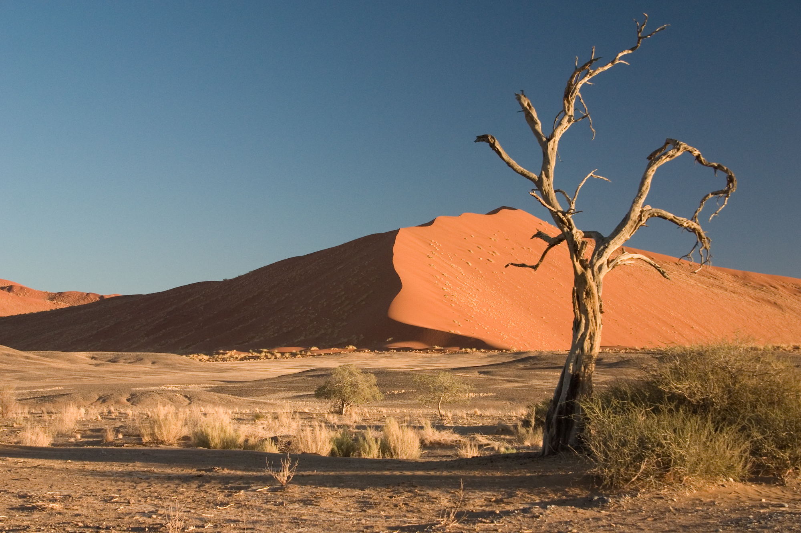
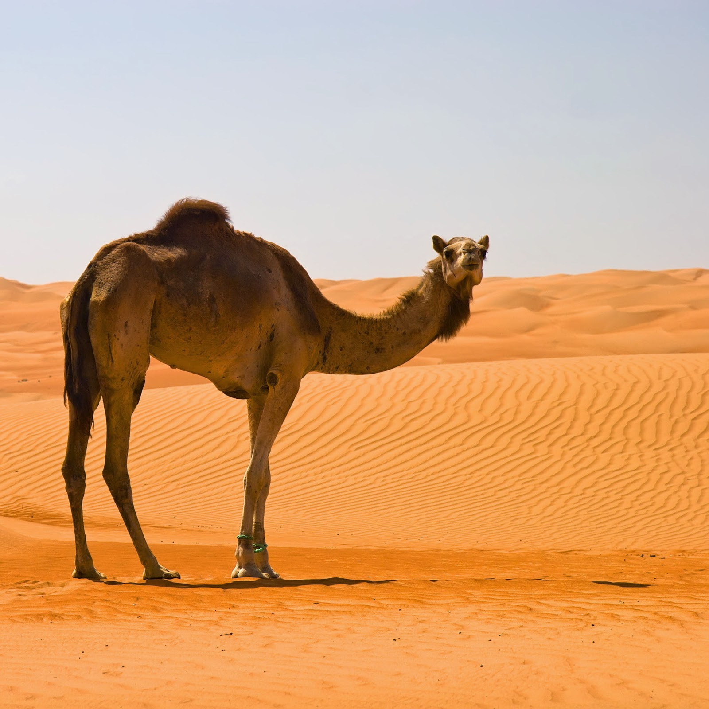

ΝΕΡΟ ΚΑΙ ΤΡΟΦΗ
Οι έρημοι διαφέρουν ως προς την ποσότητα και την συχνότητα των βροχοπτώσεων που δέχονται. Μερικές από τις ερήμους μπορεί να έχουν μια μόνο ημέρα βροχής ή και λιγότερο ετησίως. Οι περισσότερες βροχές στην έρημο συνοδεύονται από ίσχυρες καταιγίδες και συνήθως είναι καταρρακτώδεις και λίαν περιορισμένης τοπικής έκτασης, επηρεάζοντας μόνο λίγα τετραγωνικά χιλιόμετρα κάθε φορά. Αυτές οι νεροποντές δημιουργούν ξαφνικές πλημμύρες, οι οποίες περνούν ορμητικά μέσα από ρεματιές και χαράδρες. Κατά την διάρκεια των καταιγίδων, κάποια ποσότητα νερού κατορθώνει να διεισδύσει στο έδαφος λόγω κορεσμού, αλλά η περιορισμένη ποσότητα νερού που παράγεται με τον τρόπο αυτό, συχνά είναι πολύ κάτω από την επιφάνεια του εδάφους. Οποιαδήποτε μόνιμη ή ημιμόνιμη πηγή νερού στην έρημο, όπως μια όαση ή ένα πηγάδι είναι μια σπάνια και πολύτιμη πηγή για οποιοδήποτε τοπικό πληθυσμό.
Κατανομή και Εντοπισμός Πηγών
Έλεγχος κατανάλωσης νερού - Όλα τα πολιτικά αεροσκάφη μεταφέρουν μια ποσότητα νερού και αναφυκτικών που είναι αρκετή για μερικές ημέρες με συνθήκες ελεγχόμενηες κατανάλωσης. Επίσης, πρέπει να φουσκωθούν οι ναυαγοσωστικές λέμβοι και να χρησιμοποιηθεί η ποσότητα νερού που φέρεται σε αυτές. Συχρόνως, είναι πολύ σημαντικό να εξοικονομείτε αποιαδήποτε ποσότητα υγρών υπάρχει στον οργανισμό και να χρησιμοπιείτε το όποιο απόθεμα νερού έχετε όσο το δυνατό επωφελέστερα για εσάς. Αν δεν έχετε καθόλου νερό, μην τρώτε τίποτε - η λήψη τροφής απορροφά πολύτιμο νερό του οργανισμού σας, τόσο κατά την διαδικασία της πέψης, όσο και κατά την διαδικασία της απέκκρισης. Συνιστάται να μη φάτε τίποτε κατά τις πρώτες 24 ώρες. Μετά την πάροδο του χρόνου αυτού, καταστρώστε ένα αυστηρό πρόγραμμα κατανομής του όποιου αποθέματος νερού έχετε μαζί σας. Πρέπει να σχεδιάσετε τις επόμενες ενέργειες: πως δηλαδή θα εντοπίσετε, συλλέξετε, αποθηκεύεσετε και διανείμετε το νερό.
Προσοχή: Το νερό από τα ψυγεία των σύγχρονων αυτοκινήτων δεν πρέπει να πίνετε απευθείας διότι περιέχει βλαβερές χημικές ουσίες. Το νερό αυτό μπορεί να μετατραπεί σε πόσιμο με απόσταξη.
Απόσταξη - Τα περισσότερα οχήματα και αεροσκάφη διαθέτουν επαρκή ανταλλακτικά και καύσιμα που επιτρέπουν στον επιζήσαντα να κατασκευάσει και να χρησιμοποιήσει έναν αποστακτήρα. Αν αυτό γίνεται με σωστό τρόπο, τότε μπορείτε να μετατρέψετε με απόσταξη οποιαδήποτε πηγή μολυσμένου νερού σε καθαρό και πόσιμο νερό. Αυτό πρέπει να γίνει πριν από οποιαδήποτε απόπειρα απομάκρυνσης από το αεροσκάφος ή όχημα. Ο κανόνας της σωστής λειτουργίας ενός αποστακτήρα είναι να θερμανθεί το νερό σε βαθμό όπου θα αρχίσει να παράγεται ατμός. Ο ατμός αυτός θα είναι απαλλαγμένος από ξένες και ακάθαρτες ουσίες. Η ψύξη του ατμού τον μετατρέπει πάλι σε νερό. Το νερό που προκύπτει από τη διαδικασία αυτή είναι πόσιμο.
Βροχή - Είναι λάθος να νομίζετε ότι δεν βρέχει ποτέ στην έρημο. Η βροχή πέφτει συνήθως στις παράκτιες ή στις ορεινές περιοχές. Στις ορεινές περιοχές προκαλούνται συνήθως σύντομες, αλλά χειμαρρώδεις ξαφνικές πλημμύρες στα χαμηλότερα υψόμετρα. Το νερό της βροχής εξατμίζεται γρήγορα, όμως δημιουργούνται θήλακες σε φυσικές πέτρινες δεξαμενές, όπου το νερό προστατέυται από τον ήλιο.
Νερό από φυτά
Πολλά φυτά με σαρκώδη φύλλα ή μίσχους αποθηκεύουν πόσιμο νερό. Δοκιμάστε τα, οπουδήποτε τα βρίσκετε. Οι κάκτοι δεν έχουν μεγάλο ρίζωμα, κάτι που σημαίνει πως αποθηκεύουν το νερό στον κορμό τους. Σε πολλές περιπτώσεις, ο χυμός αυτός είναι ακίνδυνος και μπορείτε να τον πιείτε. Η εξαγωγή του χυμού από τον κάκτο δεν είναι εύκολη διαδικασία, διότι σχεδόν όλοι οι κάκτοι καλύπτονται από αγκάθια. Τα αγκάθια αυτά είναι δύσκολο να αφαιρεθούν από το δέρμα και προκαλούν πληγές αν μείνουν μέσα.
Ο κυλινδρικός κάκτος (barrel cactus) των νοτιοδυτικών Ηνωμένων Πολιτειών είναι μια πιθανή πηγή νερού, αλλά χρησιμοποιήστε την μονάχα ως έσχατη ανάγκη και μόνο αν έχετε την δυνατότητα να κόψετε το σκληρό και αγκαθωτό φλοιό του. Κόψτε το πάνω μέρος του κάκτου και λιώστε τον πολτό που υπάρχει μέσα στο φυτό. Μαζέψτε το υγρό μέσα σε ένα δοχείο. Κομμάτια κάκτου μπορούν να μεταφέρονται ως μια πηγή νερού ανάγκης. Ένας κυλινδρικός κάκτος ύψους περίπου 1,10μ, μπορεί να αποδώσει πάνω από ένα λύτρο γαλακτώδη χυμό.
Προσοχή: Ενώ ο κυλινδρικός κάκτος είναι μια εξαίρεση του κανόνα, ότι δεν πρέπει δηλαδή να τρώμε φυτά με γαλακτώδη ή χρωματιστό χυμό, ο μεγάλος και πολυδάκτυλος κάκτος (saquarro) που ευδοκιμεί, κυρίως στην Αριζόνα, είναι λίαν δηλητηριώδης και πρέπει να αποφέυγεται.
Ορισμένα φυτά της ερήμου, ιδίως δέντρα, αποθηκεύουν το νερό στις ρίζες τους, οι οποίες βρίσκονται κοντά στην επιφάνεια του εδάφους τους. Οι ρίζες αυτές πρέπει να αφαιρούνται από το έδαφος με σκάψιμο και να κόβονται σε κομμάτια μήκους 60εκ. εώς 1 μέτρο. Ο φλοιός πρέπει να αφαιρείται πριν από την εξαγωγή του νερού που περιέχεται στις ρίζες. Η αδανσονία, η βελανιδιά της ερήμου και ο ευκάλυπτος της Νοτίου Αφρικής είναι μερικά παραδείγματα τέτοιων δέντρων που περιέχουν νερό στις ρίζες τους.
ΤΡΟΦΗ
Η τροφή δεν αποτελεί προτεραιότητα για την επιβίωση στην έρημο. Πράγματι, αν το νερό είναι περιορισμένο να μην πάρετε καθόλου τροφή, έως ότου βρείτε νερό. Αυτό ισχύει ιδιαίτερα για τροφές πλούσεις σε πρωτεϊνες, όπως είναι η ξηρά τροφή ανάγκης και το κρέας των άγριων ζώων, που απαιτούν νερό για την χώνεψη. Η πιθανή διάρκεια της ζωής σας εξαρτάται από την ποσότητα του νερού που περιέχεται στον οργανισμό σας και από όσες επιπλέον ποσότητες μπορείτε να αντλήσετε. Η λήψη τροφής είναι ένας μακροπρόθεσμος παράγοντας επιβίωσης, αλλά και τότε ακόμη συνιστάται, όπου είναι δυνατό, να τρώτε φυτά που περιέχουν υγρά.
Φυτά κατάλληλα για τροφή
Χουρμαδιά ή Φοίνικας - Το φυτό αυτό είναι ένα ψηλό δέντρο του οποίου το φυσικό περιβάλλον εκτείνεται από την Νότιο Αφρική μέχρι την Ινδία. Οι χουρμαδιές βρίσκονται πάντοτε κοντά σε νερό. Έχουν μακριούς, λεπτούς κορμούς με μακριά φύλλα στην κορυφή που το ύψος τους μπορεί να φθάσει μέχρι 4,75μ. Τόσο οι καρποί τους, όσο οι νεοαναπτυσσόμενες κορυφές του δέντρου μπορούν να φαγωθούν όπως είναι, χωρίς βράσιμο, αλλά τα νέα φύλλα χρειάζονται βράσιμο για να καταστούν φαγώσιμα.
Αθάνατος ή Αγαύη - Το φυτό αυτό είναι γνωστό τόσο στην έρημο, όσο και σε τροπικές περιοχές. Η αγαύη διακρίνεται από τα αγκαθωτά, σκληρά φύλλα που εξέρχονται από το έδαφος. Από το κέντρο του φυλλώματος αναπτύσσεται ένας ψηλός, ευθυτενής ανθοφόρος μίσχος, ο οποίος τελικά παράγει ένα κίτρινο ανθοφόρο στάχυ. Ο ανθοφόρος μίσχος μπορεί να φαγωθεί πριν βγάλει άνθη και, όταν ψηθεί, έχει πολύ ευχάριστη γεύση. Ο χυμός από τα φύλλα μπορεί, επίσης, να αποξηρανθεί και να αναμιχθεί με στάχτη από ξύλα για την παραγωγή σαπουνιού, το οποίο μπορεί να χρησιμοποιηθεί τόσο σε αρμυρό, όσο και σε γλυκό νερό.